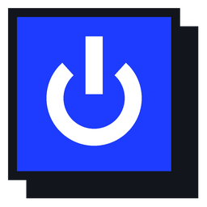
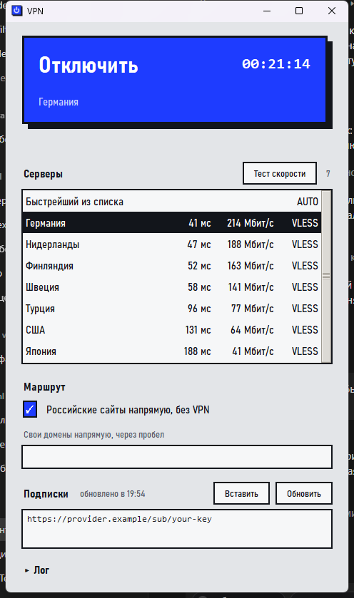
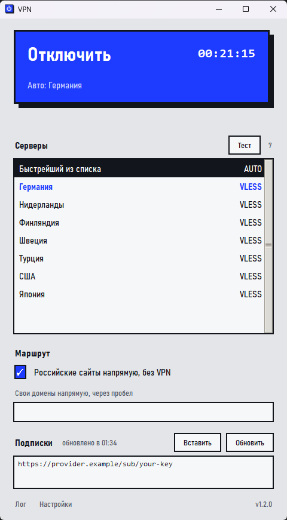
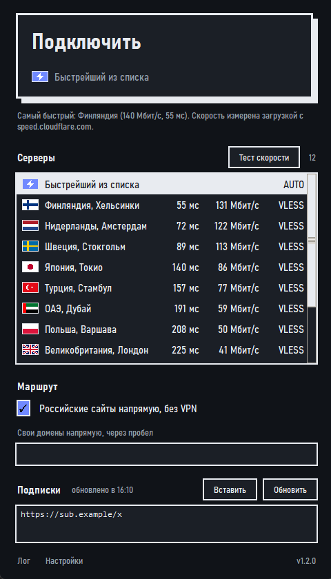

VPN-клиентПростой VPN-клиент для Windows, Linux и macOS. Бесплатный, с открытым кодом. Ничего устанавливать не нужно: скачал и запустил.
Скачать для WindowsFimaVPN.exe, Windows 10 и 11
Это программа для компьютеров. Открой эту страницу на компьютере, чтобы скачать её.
Программа не продаёт и не выдаёт VPN: она подключается к серверам, ссылку на которые у тебя уже есть от провайдера или от твоего собственного сервера.

Версии для Linux и macOS новые: они собираются и проходят автоматические проверки, но на настоящих компьютерах проверены меньше, чем версия для Windows. Если что-то не работает, расскажи об этом. Контрольные суммы лежат на странице релиза.
vless://, vmess://, trojan://, ss://, hysteria2://, tuic://.

Программа не подписана платным сертификатом, поэтому SmartScreen и некоторые антивирусы настораживаются. Нажми «Подробнее», затем «Выполнить в любом случае». Если не доверяешь готовому файлу, собери его сам из исходников: весь код открыт.
Нажми на неё правой кнопкой, выбери «Открыть» и подтвердите. Один раз этого достаточно. Либо в терминале: xattr -dr com.apple.quarantine FimaVPN.app.
Нужен pkexec (пакет polkit) и запущенный графический агент polkit: в обычных рабочих окружениях (GNOME, KDE, XFCE) он есть. Ядру VPN нужны права, чтобы создать сетевой адаптер.
Открой раздел «Лог» внизу окна: там причина. Частые причины: подписка устарела (проверь её в кабинете провайдера), запущен другой VPN (выключи его), на Windows нет прав администратора.
У VPN-провайдера или на собственном сервере: панели 3x-ui, Marzban и Remnawave выдают такие ссылки. Ссылка-подписка работает как пароль: не публикуй её.
Программа сама проверяет GitHub при запуске и раз в несколько часов, скачивает новую версию, проверяет её контрольную сумму и ставит при следующем запуске или закрытии. Если нужно сразу, нажми «Проверить» в «Настройках».